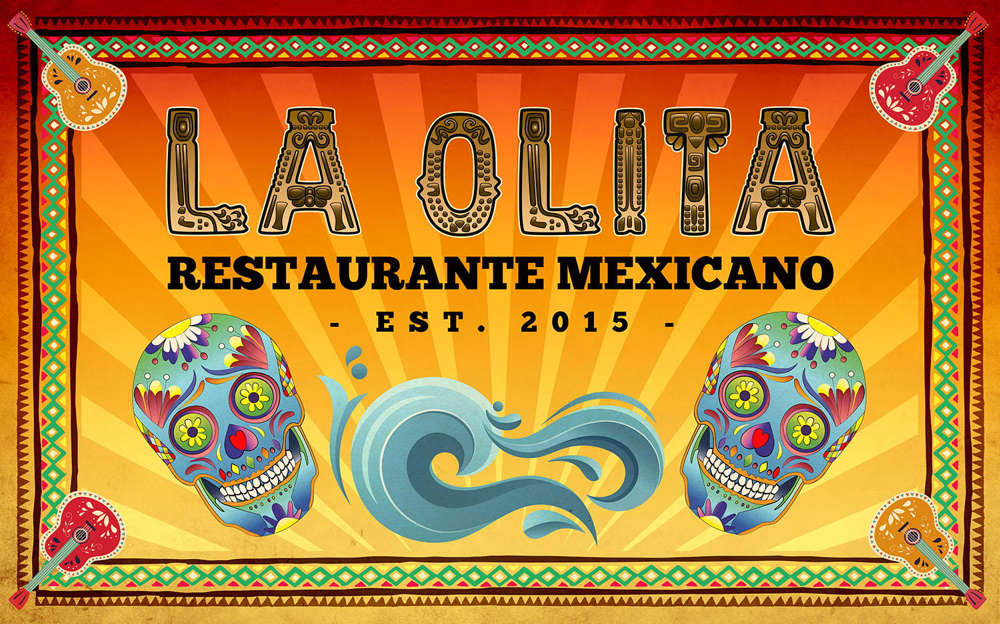

Restaurang La Olita hittar du på Skånegatan 87.
Våra öppettider är:
Månd-torsdag: 17-21
fredag: 17-01
Lördag: 17-01
Söndag: 17-21

Nyheter
Ny ventilation och öppning 27 jan
13 januari, 2023
Nu har vi satt in ny ventilation i hela restaurangen och slår upp dörrarna på nytt fredag den 27 januari 2023. Välkomna!
Öppning den 4 febr
30 januari, 2022
Hej kära gäster!
Efter lite renovering och en inspirationsresa till Mexico är vi nu tillbaka och öppnar bordsbokningen igen till Stockholms bästa Mexikanare.
Nu på fredag 4 feb öppnar vi kl 17.00
Boka bord gör du genom att surfa in på fliken ”boka bord” och trycka på bokningsknappen ”Boka bord här!”.